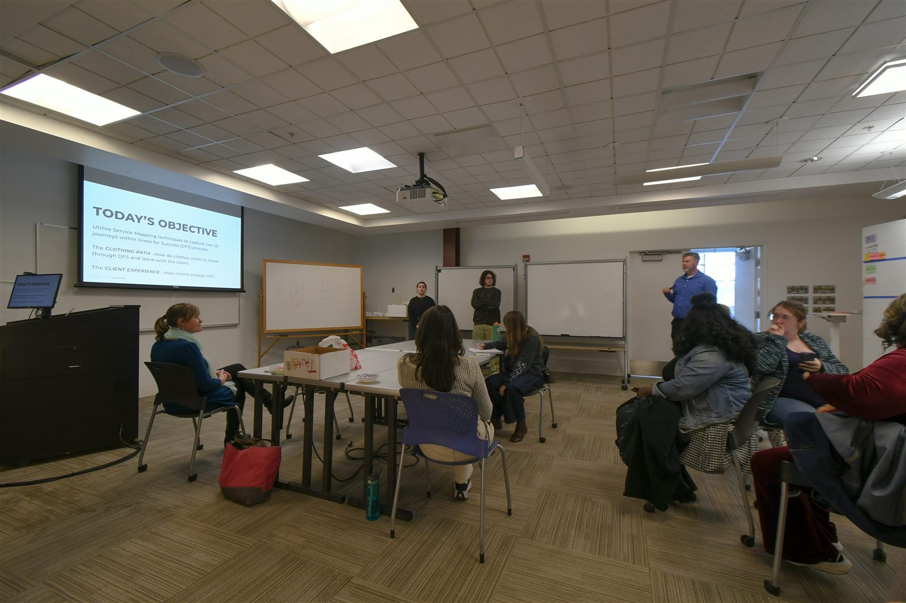
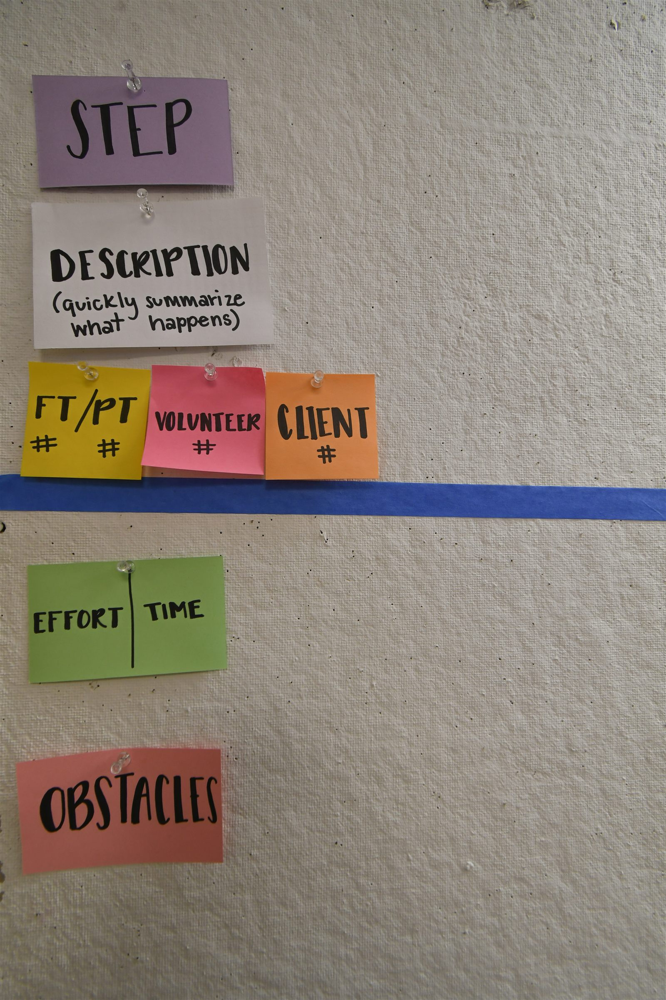
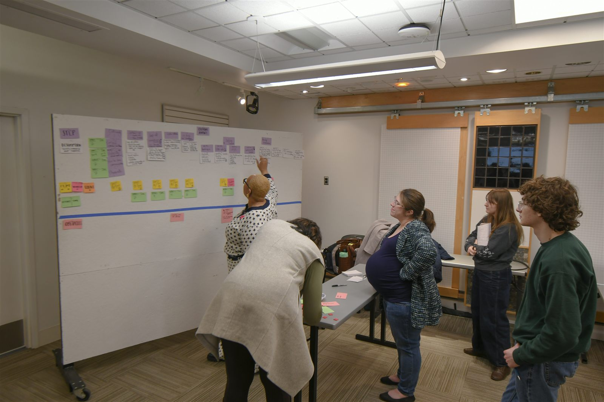
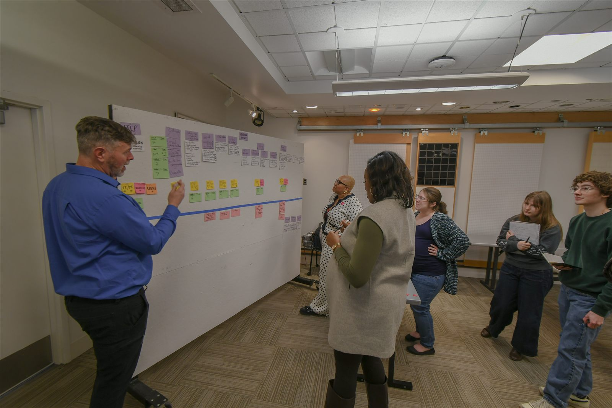
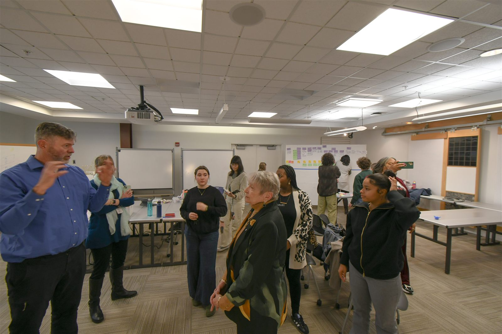
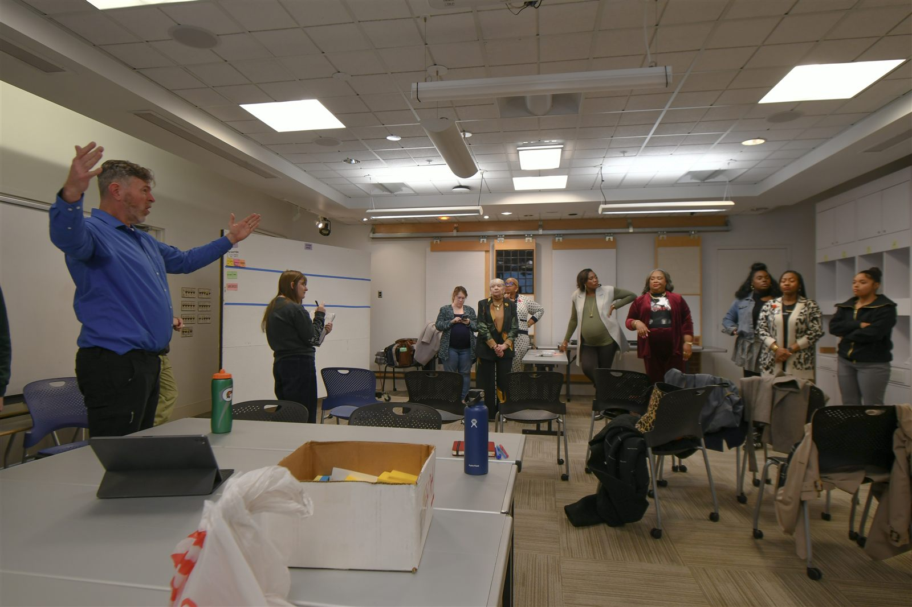
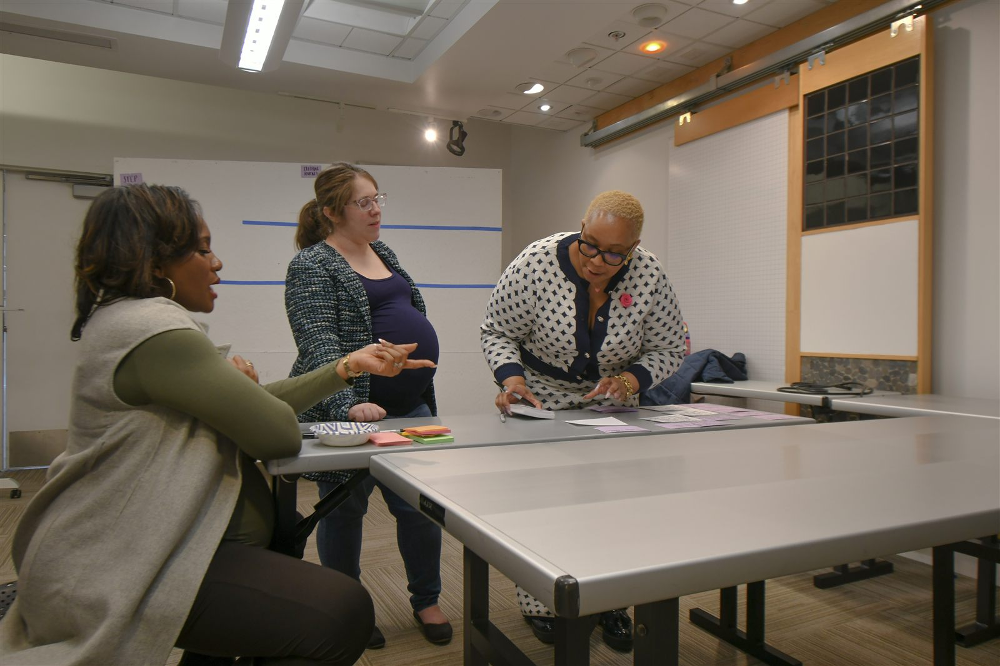

Staff and clients knew what wasn't working. No one had asked.
The Organization
Dress for Success Columbus helps women build professional wardrobes for job interviews and careers. Every client moves through fitting rooms, wardrobe selection, and intake — supported by a mix of full-time staff, part-time staff, and volunteers.
The system works. But there were friction points embedded in it that no one had mapped: handoffs between roles that relied on informal knowledge, steps where effort didn't match need, obstacles staff had worked around for years without naming them.
The Brief
The project asked us to document the fitting experience and back-of-house workflow — to make the invisible visible. That meant getting into the space, talking to the people who ran it, and building a picture of the full service journey before any recommendations could be made.

Workshop kickoff — Spring 2025 · CCAD Service Design Studio
Contextual Inquiry
We visited the Dress for Success Columbus location to observe the workflow directly. Fitting rooms, donation intake, wardrobe selection — each space had its own logic, and the connections between them were where friction lived.
The approach was contextual: observe first, then ask. We moved through the space with staff, tracing what happened at each handoff and where the informal systems lived.
Embedded Research
We returned to the site multiple times over the course of the project — not as visitors, but working within the organization. Several team members volunteered in the warehouse, moving through the same donation intake and sorting roles that staff navigate every shift. Three members of the research team went through full styling sessions as clients.
That firsthand experience changed what we were looking for. The friction points that showed up in the blueprint weren't abstract — they were things the team had felt.

On-site visit — team debriefing in the fitting area
The Methodology
Back in the studio, we built a service blueprint: a wall-sized map of the Clothing Journey, step by step. Each column represents one moment in the service. Each row tracks a different actor — full-time staff, part-time staff, volunteers, clients — and captures the effort and time involved.
Below the blue tape divider: obstacles. The things that create friction, slow the service down, or fall through the gaps between roles.

The service blueprint framework before mapping began
Building the Map
Mapping happened collaboratively: DFS staff alongside design students, moving through the journey step by step and adding detail in real time. Each sticky note is a data point — a task, a time estimate, an obstacle that had never been written down before.

Adding steps and role assignments to the live map

Walking the map — reviewing each step as the journey takes shape
The most important insights came from people who had never been asked to articulate what wasn't working — they just lived with it.
What the Map Surfaced
The obstacles section told the real story. Most friction wasn't caused by bad processes — it was caused by informal ones. Staff had developed workarounds over time that functioned individually but created gaps for the next person in the chain.
Putting those gaps on a shared wall, by name, was the first step toward addressing them.

Synthesis session — debriefing the completed map with the full group
Deliverables
The synthesis led to an employee handbook and a set of refined service guidelines targeting the most critical gaps. Those documents are internal to Dress for Success Columbus.
What's here is the process that produced them: site research, blueprint methodology, and the discipline of listening before recommending.
Reflection
Good service design starts with listening. Every interview and observation surfaced something a diagram alone wouldn't have found — the informal workaround, the undocumented handoff, the step that worked in theory and didn't in practice.
The map was the deliverable. The conversations were the research.

